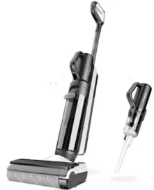
1. Tear down handle& Accessory 9
2. Tear down Assy brush part 9
4. Tear down Repair Charging 14
History
| No | Date | Comments | Version | ISSUE | Approve |
|---|---|---|---|---|---|
| 1 | 24.07.23 | First Draft | 1.0 | Qiu | |
Tools
Electric screwdriver\Long-nose pliers\Slotted screwdriver\Zip tie\Scissors
Repair notice
Important Safety Instructions:
1. Wear gloves when carrying out any repair work.
2. Ensure that there are no exposed electrical wires in the maintenance environment and strictly prohibit direct testing of the equipment with AC power to prevent electric shock.
3. When repairing electrical components, please disconnect the battery pack first.
Preparation:
Empty the clean water tank and dirty water tank before disassembly.
Replacement requirements:
1. All parts that have passed the cross-check must be removed from the faulty machine, fitted with the user's original adapter and then subjected to the next replacement test.
2. After repair, organise the removed old parts and unused parts.
Range of Product
| No | Product Name | Factory Serial Model | SKU | Note |
|---|---|---|---|---|
| 1 | Floor One S5 Combo Power KIT | CL2020F-05 | FW151200TW | |
| 2 | Floor One S5 Combo Power KIT | CL2020H-07 | FW150400DE | |
| 3 | Floor One S5 Combo Power KIT | CL2020F-04 | FW150700US | |
| 4 | Floor One S5 Combo Power KIT | CL2020H-14 | FW151400UK | |
| 5 | Floor One S5 Combo Power KIT | CL2020K-02 | FW151500AU | |
| 6 | Floor One S5 Combo Plus | CL2020H-06 | FW150300DE | |
| 7 | Floor One S5 Combo | CL2020H-04 | FW150100MY | |
| 8 | Floor One S5 Combo | CL2020H-01 | FW150100EU | |
| 9 | Floor One S5 Combo | CL2020F-02 | FW150100CA | |
| 10 | Floor One S5 Combo | CL2020O-01 | FW151700RU | |
| 11 | Floor One S5 Combo | CL2020B-01 | FW150100JP | |
| 12 | Floor One S5 Combo | CL2020H-12 | FW151100TH | |
| 13 | Floor One S5 Combo | CL2020H-08 | FW150500PH | |
| 14 | Floor One S5 Combo | CL2020H-09 | FW150800IL | |
| 15 | Floor One S5 Combo | CL2020F-01 | FW150100US | |
| 16 | Floor One S5 Combo | CL2020H-03 | FW150100ID | |
| 17 | Floor One S5 Combo | CL2020K-01 | FW150100AU | |
| 18 | Floor One S5 Combo | CL2020H-10 | FW150900IN | |
| 19 | Floor One S5 Combo | CL2020F-03 | FW150600TW | |
| 20 | Floor One Switch S6 | CL2316E-04 | FW301700TW | |
| 21 | Floor One Switch S6 | CL2316H-01 | FW301300AU | |
| 22 | Floor One Switch S6 | CL2316I-01 | FW301200JP | |
| 23 | Floor One Switch S6 | CL2316E-01 | FW300700ID | |
| 24 | Floor One Switch S6 | CL2316G-01 | FW300900DE | |
| 25 | Floor One Switch S6 Pet | CL2316G-02 | FW301400FR | |
| 26 | Floor One Switch S6 | CL2316F-01 | FW300800US | |
| 27 | Floor One Switch S6 | CL2316E-02 | FW301500SG | |
| 28 | Floor One Switch S6 | CL2316E-03 | FW301600IN | |
| 29 | Floor One Switch i6 Power Kit | CL2543G-01 | FW371600ID | |
Range of Spare Part
| No | Spare Part Name | Remark |
|---|---|---|
| 1 | Repair Charging Chip | 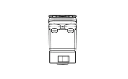 |
| 2 | Plastic part | Seal rubber 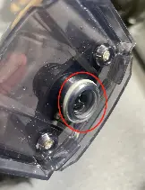 |
| 3 | Plastic part | Rotary union 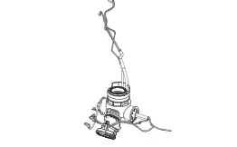 |
| 4 | Plastic part | Power source lock latch 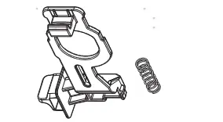 |
| 5 | Plastic part | Assy front cover |
| 6 | Sensor | Sewage sensor 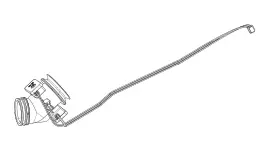 |
| 7 | Sensor | Water level sensor |
| 8 | Main Body | Old version Power source pin 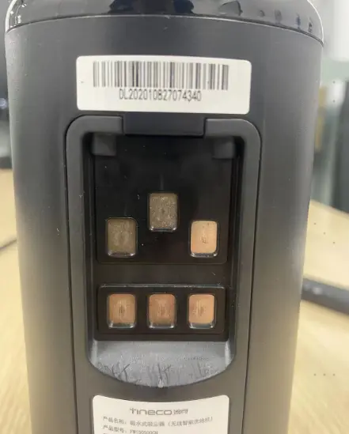 |
| 9 | Main Body | New version Power source 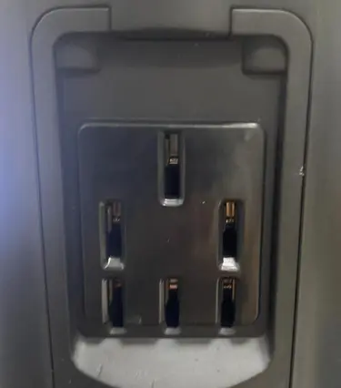 |
| 10 | Repair Wheel |  |
| 11 | Brush Roller Cover | 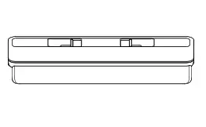 |
| 12 | Adapter | 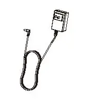 |
| 13 | Wire | Charging wire 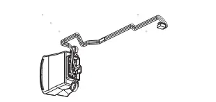 |
| 14 | Wire | Old version power source wire 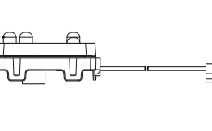 |
| 15 | Wire | New version power source wire 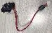 |
| 16 | Wire | DWT signal wire 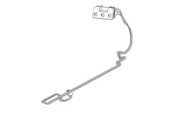 |
| 17 | PCBA | Main PCBA |
| 18 | Scraper | |
| 19 | Pump | |
| 20 | Handle | |
| 21 | DWT | |
| 22 | CWT | |
| 23 | Charging Base | |
| 24 | Switch | Micro swtich |
| 25 | Motor | Brush roller motor |
| 26 | Motor | Main motor 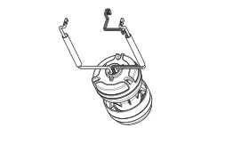 |
Wiring diagram
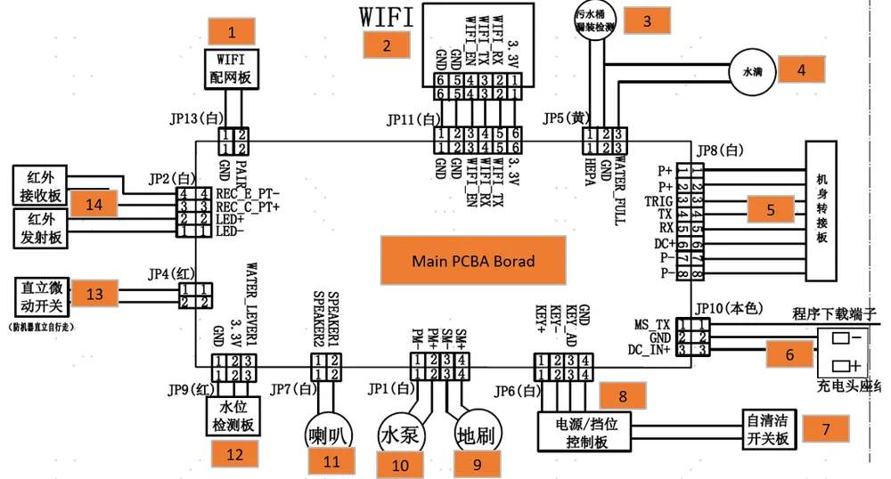
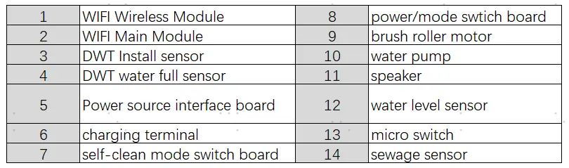
Tear down Guide
Tear down handle& Accessory
Pull the handle up after holding according to photos as below
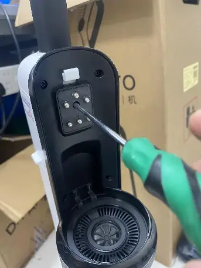
Disassemble all accessories
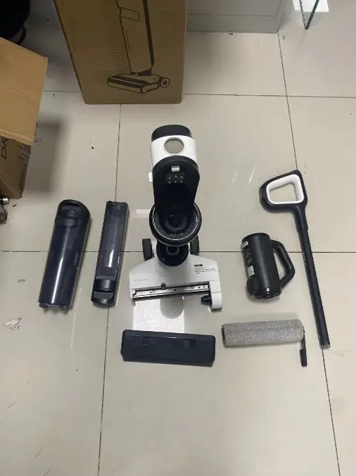
Tear down Assy brush part
Remove 3 screws to disassemble scraper
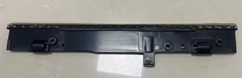
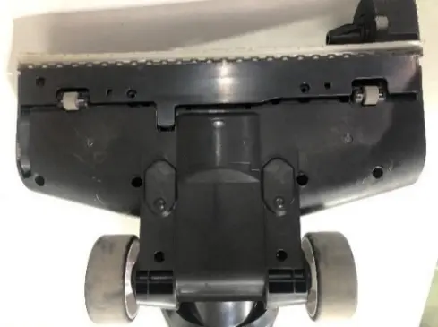
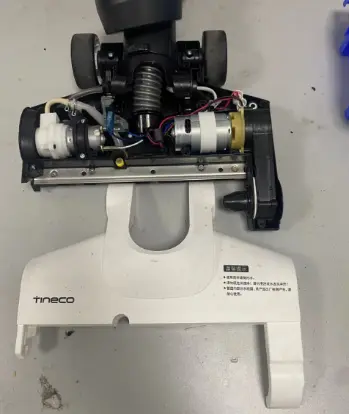
Remove screws to disassemble brush cover
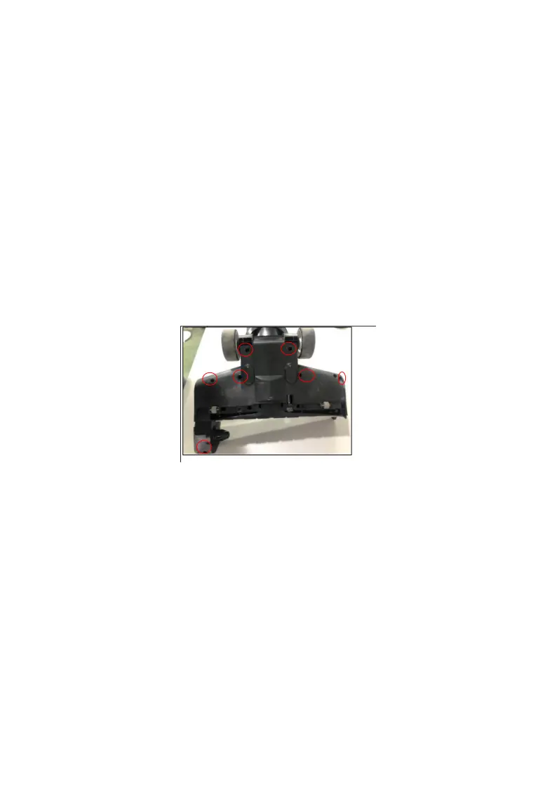
Remove screws and unplug pipe to disassemble the pump
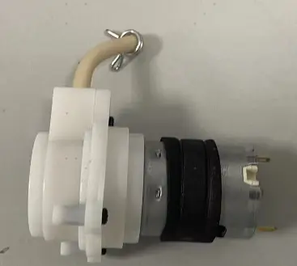
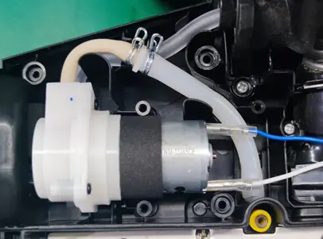
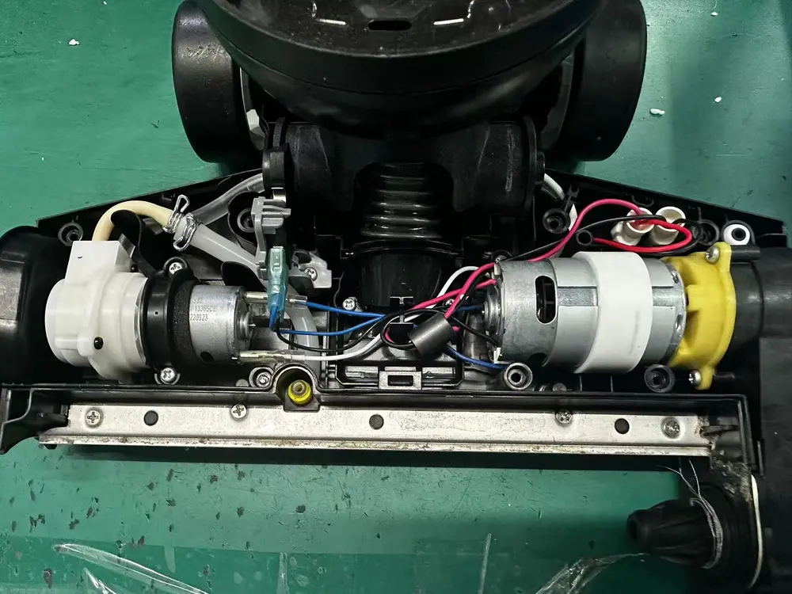
Unplug terminal to disassemble the brush roller motor
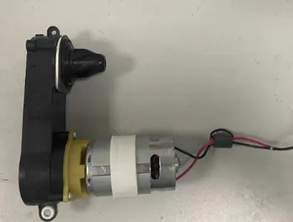
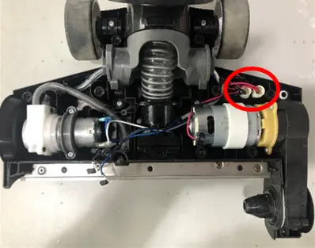
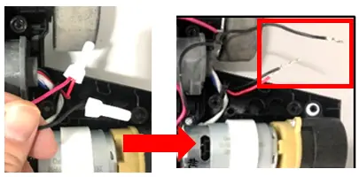
Remove screws and unplug terminal to disassemble Micro switch
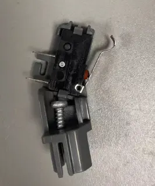
Remove screws to disassemble brush bottom
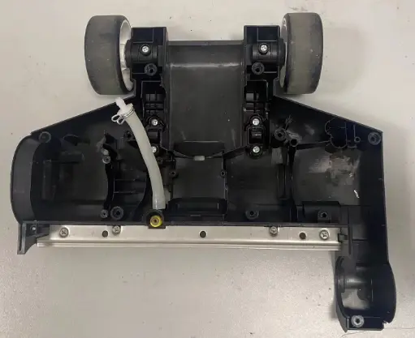
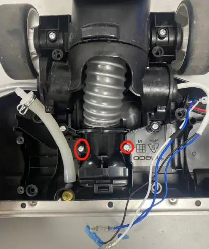
Tear down Main body
Refer to the tearing down steps (2.0） to disassemble Assy brush part
Unscrew two screws and remove spring to disassemble Power source lock latch
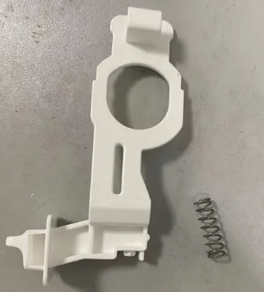
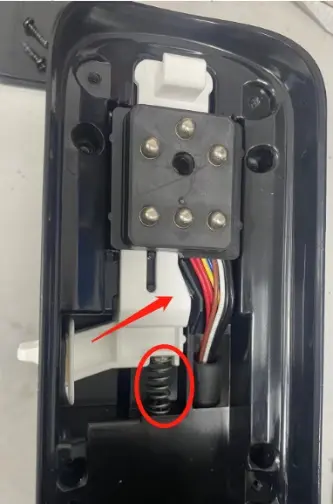
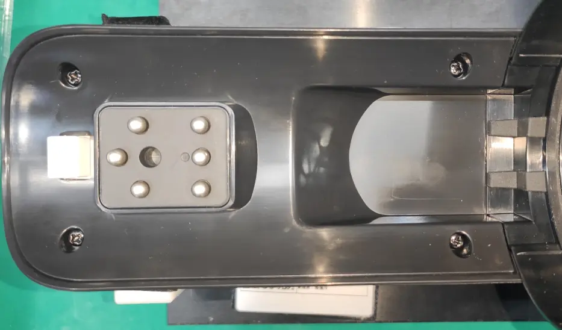
Remove 6 pcs screws to disassemble WIFI PCBA
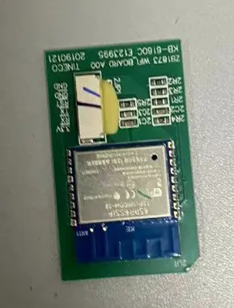
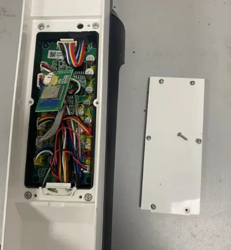
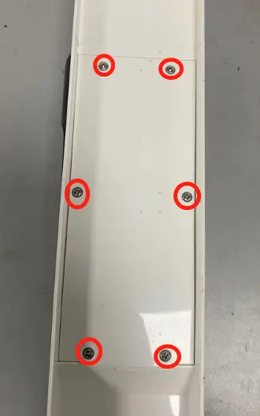
Unscrews two screws to disassemble main body cover bottom，and unscrew 2 screws
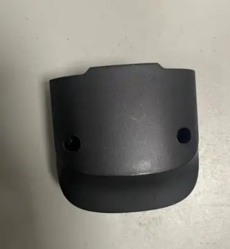
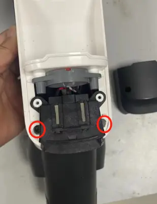
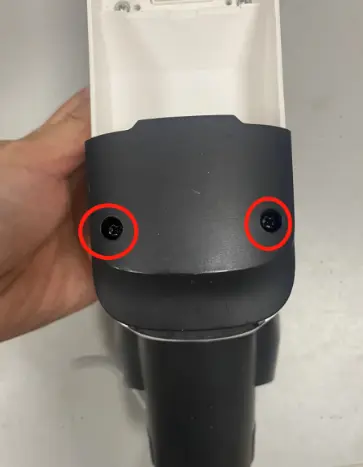
Disassemble Assy front cover and rear cover
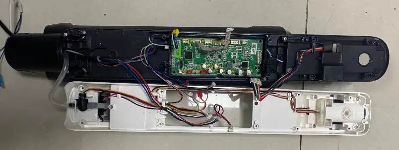
Repulg terminal to disassemble Main PCBA
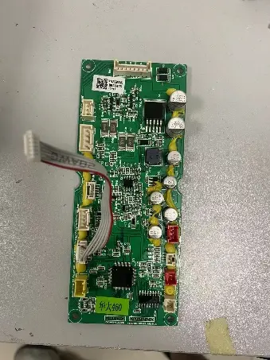
Repulg terminal to disassemble Wire
Repulg terminal to disassemble power source wire
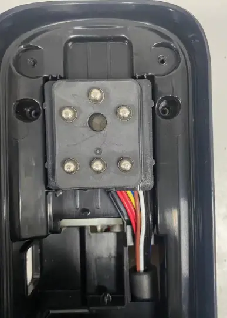
Unscrews 2 screws，remove plastic part and disassemble sewage sensor
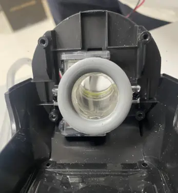
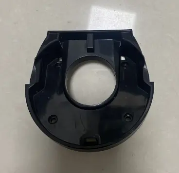
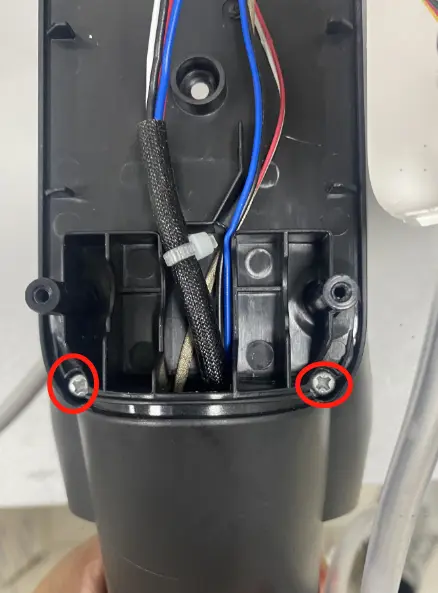
Repulg terminal disassemble water level sensor
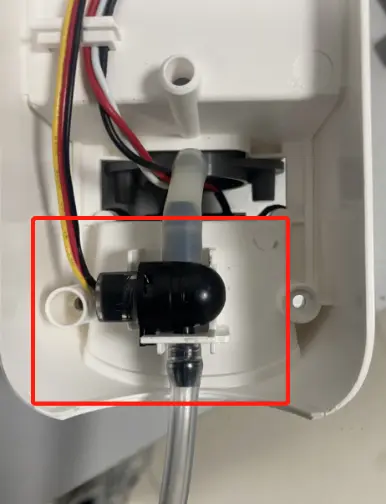
Unscrews 3 screws and unplug terminal to disassemble the DWT signal wire
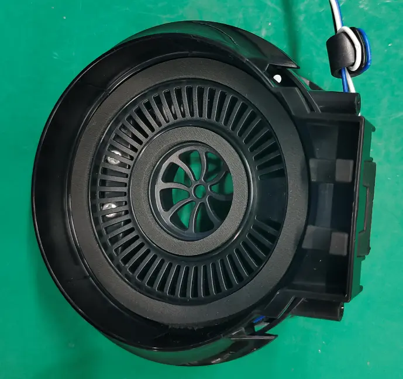
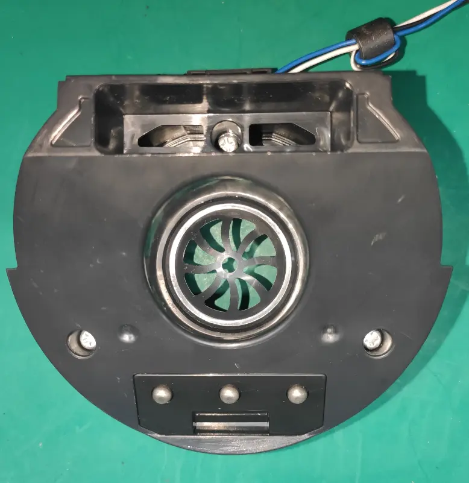
Tear down Repair Charging
Unscrew charging base screws


Disassembly repair charging chip

Repair Guide
| Failure System | Failure Phenomenon | No | Failure Mode | Repair Solution | Spare Parts |
|---|---|---|---|---|---|
| Water circulation system failure | No/less spray water | 1 | CWT failure | replace CWT | CWT |
| 2 | CWT seal ring rubber failure | replace CWT seal ring | CWT seal ring | ||
| spray hole blocked | clean spray hole | maintenance | |||
| water level sensor blocked | replace water level sensor | water level sensor | |||
| 3 | pipe blocked | replace water pipe | water pipe | ||
| 4 | pump failure | replace pump | pump | ||
| 7 | pipe bent or broken | fix or replace pipe | water pipe | ||
| 5 | main pcba failure | replace main pcba | main pcba | ||
| leaking water | 9 | Debris channel /Air duct blocked | 1.Clean the debris channel blockage、debris wrapped around the brush roller 、suction nozzle blockage; 2.Dry and clean HEPA; 3.Empty and clean the DWT | Maintenance | |
| 10 | CWT leaking water | replace CWT | CWT | ||
| 11 | pump failure | replace pump | pump | ||
| 12 | water level sensor broken | replace water level sensor | water level sensor | ||
| 13 | water pipe loose | Re-plug water pipe | water pipe | ||
| 14 | Sewage recovery pipe damaged | replace sewage recovery pipe | Rotary union | ||
| 15 | DWT broken | replace DWT | DWT | ||
| 16 | brush cover damaged | replace brush cover | brush roller cover | ||
| 17 | HEPA damaged | replace HEPA | HEPA | ||
| 18 | water pipe damage | replace water pipe | water pipe | ||
| no suck up water | 19 | Debris channel /Air duct blocked | 1.Clean the debris channel blockage、debris wrapped around the brush roller 、suction nozzle blockage; 2.Dry and clean HEPA; 3.Empty and clean the DWT | maintenance | |
| 20 | HEPA not install properly | reinstall HEPA properly | maintenance | ||
| 21 | brush roller damage | replace brush roller | brush roller | ||
| 22 | Sewage recovery pipe damaged | replace sewage recovery pipe | Rotary union | ||
| 23 | Power source failure | replace Power source | Power source | ||
| 24 | brush motor failure | replace brush roller motor | brush roller motor | ||
| charging system failure | No response when charging | 25 | adapter failure | replace adapter | adapter |
| 26 | charging base wire failure | replace charging base | charging base | ||
| 27 | charging base poor contact | replace charging base or Repair Charging Chip | charging base or Repair Charging Chip | ||
| 28 | main body wire damage | replace Charging wire | Charging wire | ||
| Old version Power source poor contact | Replace new version Power source and wire | new version Power source and wire | |||
| 29 | battery pack failure | replace Power source | Power source | ||
| 30 | Main PCBA failure | replace main PCBA | main PCBA | ||
| Battery level indicator flashes several times and then goes off, then the machine stop charging | 32 | battery pack failure | replace Power source | Power source | |
| 33 | adapter failure | replace adapter | adapter | ||
| battery level under 100% and the indicator unable To Increase | 34 | battery pack failure | replace Power source | Power source | |
| 35 | adapter failure | replace adapter | adapter | ||
| battery level drop when in charging | 36 | battery pack failure | replace Power source | Power source | |
| 37 | adapter failure | replace adapter | adapter | ||
| charging system failure | Poor charging contact（shake to charge） | 38 | Charging Pin rusted | Replace the repair charging chip | repair charging chip |
| Old version Power source poor contact | Replace new version Power source and wire | new version Power source and wire | |||
| 39 | Poor contact of the charging contact pin | Replace the repair charging chip | repair charging chip | ||
| 40 | repair charging cosmetic damage | Replace the repair charging chip | repair charging chip | ||
| 41 | charging base cosmetic damage | replace charging base | charging base | ||
| 42 | charging wire cosmetic damage | replace charging wire | charging wire | ||
| 43 | Rotary union worn or cosmetic damage | replace Rotary union | Rotary union | ||
| abnormal noise when in charging | 44 | adapter failure | replace adapter | adapter | |
| 45 | Main PCBA failure | replace main PCBA | main PCBA | ||
| 46 | battery pack failure | replace Power source | Power source | ||
| burn smell in main body when in charging | 47 | battery pack failure | replace Power source | Power source | |
| 48 | Main PCBA failure | replace main PCBA | main PCBA | ||
| Burning smell when in charging | 49 | battery pack failure | replace Power source | Power source | |
| 50 | adapter failure | replace adapter | adapter | ||
Turn on failure
| turn on but no reaction , screen not light up, also no reaction when charging | 51 | handle failure | replace handle | handle |
| 52 | battery pack failure | replace Power source | Power source | ||
| 53 | Main PCBA failure | replace main PCBA | main PCBA | ||
| After pressing the power button, the display lights up, but it doesn't work after releasing the micro switch. | 54 | Micro switch failure | replace Micro switch failure | Micro switch | |
| 55 | Motor failure | replace Power source | Power source | ||
| 56 | Main PCBA failure | replace main PCBA | main PCBA | ||
| stop running after several times max bar blinking | 57 | motor failure | replace Power source | Power source | |
| stop running after several times and DWT indicator alarm | 58 | DWT full | Empty/clean the DWT | maintenance | |
| 59 | DWT pin rusted | Rinse and clean the DWT top cover, bottom cover and sensor pin,and dry off | maintenance | ||
| 60 | DWT failure | replace DWT | DWT | ||
| 61 | PCBA failure | Problem solved by replaced PCBA | PCBA | ||
| stop running after several times brush roller indicator alarm | 62 | brush roller is blocked | clean brush roller | maintenance | |
| 63 | brush roller heavy wear | replace brush roller | brush roller | ||
| 64 | brush roller motor failure | replace brush roller motor | brush roller motor | ||
| 65 | Main PCBA failure | replace main PCBA | main PCBA | ||
| stop running after several times screen dies out | 66 | handle failure | replace handle | handle | |
| 67 | Main PCBA failure | replace main PCBA | main PCBA | ||
| 68 | battery pack failure | replace Power source | Power source | ||
| mode switch failure | switch mode but no reaction | 69 | handle failure | replace handle | handle |
| 70 | Main PCBA failure | replace main PCBA | main PCBA | ||
| switch mode but auto power-off | 71 | Main PCBA failure | replace main PCBA | main PCBA | |
| 72 | battery pack failure | replace Power source | Power source | ||
| 73 | motor failure | replace Power source | Power source | ||
| False alarm | stop running have nothing alarm | 74 | battery pack failure | replace Power source | Power source |
| DWT water is full but no alarm/Water is not full but still alarm | 75 | DWT full | Empty/clean the DWT | maintenance | |
| 76 | DWT pin rusted | Rinse and clean the DWT top cover, bottom cover and sensor pin,and dry off | maintenance | ||
| 77 | DWT failure | replace DWT | DWT | ||
| 78 | DWT signal wire failure | Replace DWT signal wire | DWT signal wire | ||
| 79 | PCBA failure | Problem solved by replaced PCBA | PCBA | ||
| DWT is installed but still alarm need install DWT | 80 | Software problem | Firmware upgrade | ||
| 81 | DWT pin rusted or damage | Clean DWT pin | maintenance | ||
| Replace DWT | DWT | ||||
| 82 | Opposite Body pin rusted or damage | Clean Opposite Body pin | maintenance | ||
| Replace DWT signal wire | DWT signal wire | ||||
| 83 | PCBA failure | Problem solved by replaced PCBA | PCBA | ||
| CWT have enough water but still alarm, and no water spray out from outlet. | 84 | CWT failure | replace CWT | CWT | |
| 85 | spray hole blocked | clean spray hole | maintenance | ||
| 86 | Impurities are blocking the water outlet valve under the CWT | Clean the impurities on the valve | Maintenance | ||
| 87 | CWT seal ring rubber failure | replace CWT seal ring | CWT seal ring | ||
| 88 | pump failure | replace pump | pump | ||
| 89 | main PCBA failure | replace main pcba | main pcba | ||
| False alarm | 90 | pipe blocked | replace water pipe | water pipe | |
| 91 | pipe bent or broken | fix or replace pipe | water pipe | ||
| 92 | water level sensor blocked | replace water level sensor | water level sensor | ||
| CWT have enough water but still alarm, and the machine spraying water normally | 93 | The Water level sensor has air bubbles inside | It tested okay after being turned up to the maximum setting for 30s | NFF | |
| 94 | Impurities are blocking the water outlet valve under the CWT | Clean the impurities on the valve | Maintenance | ||
| 95 | water level sensor failure | replace water level sensor | water level sensor | ||
| 96 | main PCBA failure | replace main PCBA | main PCBA | ||
| CWT have no water but not alarm | 97 | The Water level sensor has water remind inside | It tested okay after being turned up to the maximum setting for 30s | NFF | |
| 98 | Impurities are blocking the water outlet valve under the CWT | Clean the impurities on the valve | Maintenance | ||
| 99 | water level sensor failure | replace water level sensor | water level sensor | ||
| 100 | Water pipe in front of the water level sensor blocked | replace water pipe | water pipe | ||
| 101 | main PCBA failure | replace main PCBA | main PCBA | ||
| Brush roller indicator blinking but the roller spinning normally | 102 | brush roller heavy wear | replace brush roller | brush roller | |
| 103 | brush roller motor failure | replace brush roller motor | brush roller motor | ||
| 104 | Main PCBA failure | replace main PCBA | main PCBA | ||
| iloop ring always red when suck nothing dirty | 105 | Debris channel /Air duct blocked | 1.Clean the debris channel blockage、debris wrapped around the brush roller 、suction nozzle blockage; 2.Dry and clean HEPA; 3.Empty and clean the DWT | maintenance | |
| 106 | dirty sensor failure | replace dirty sensor | dirty sensor | ||
| 107 | Main PCBA failure | replace main PCBA | main PCBA | ||
| 108 | display screen failure | replace display screen | display screen | ||
| iloop ring always blue even suck dirty water (or other color liquid) | 109 | dirty sensor failure | replace dirty sensor | dirty sensor | |
| 110 | Main PCBA failure | replace main PCBA | main PCBA | ||
| 111 | display screen failure | replace display screen | display screen | ||
| screen display malfunction | screen not reaction/display incomplete/display blinking | 112 | display screen failure | replace Power source | Power source |
| 113 | Main PCBA failure | replace main PCBA | main PCBA | ||
| iloop ring not change | 114 | Main PCBA failure | replace main PCBA | main PCBA | |
| 115 | display screen failure | replace Power source | Power source | ||
| 116 | dirty sensor failure | replace dirty sensor | dirty sensor | ||
| connect to network failure | appliance cannot connect to network | 117 | display screen failure | replace Power source | Power source |
| 118 | Main PCBA failure | replace main PCBA | main PCBA | ||
| WiFi/Mute/Language Switch Button no reaction | 119 | handle failure | replace handle | handle | |
| 120 | Main PCBA failure | replace main PCBA | main PCBA | ||
| abnormal noise | motor noise | 121 | motor failure | replace Power source | Power source |
| Noise comes from main body, but not from the motor | 122 | HEPA failure | Replace HEPA | HEPA | |
| brush noise | 123 | Brush roller blocked by debris | Clean the debris channel blockage、debris wrapped around the brush roller 、suction nozzle blockage; | maintenance | |
| 124 | scraper has dirt buildup | clean the scraper | maintenance | ||
| 125 | brush roller heavy wear | replace brush roller | brush roller | ||
| 126 | The small wheel noisy | replace the repair wheel | repair wheel | ||
| 127 | Scraper broken | replace scraper | scraper | ||
| pump noise | 128 | pump noise | replace pump | pump | |
| Rotary union noise | 129 | Rotary union failure | replace Rotary union | Rotary union | |
| Self-cleaning malfunction | press the self-cleaning button,Voice Prompt“Please place appliance on charging dock,and the self-cleaning function not start | 130 | adapter failure | replace adapter | adapter |
| 131 | Poor charging contact | replace repair charging chip | repair charging chip | ||
| 132 | charging base wire failure | replace charging base | charging base | ||
| 133 | Main body charging wire failure | replace wire | wire | ||
| 134 | battery pack failure | replace Power source | Power source | ||
| 135 | Main PCBA failure | replace main PCBA | main PCBA | ||
| 136 | Rotary union cosmetic damage | replace Rotary union | Rotary union | ||
| stop running in self-cleaning process, and the screen turned off | 137 | adapter failure | replace adapter | adapter | |
| 138 | charging base failure | replace charging base | charging base | ||
| 139 | charging base poor contact | replace charging base | charging base | ||
| stop running in self-cleaning process, and the DWT false alarm | 140 | DWT full | Empty/clean the DWT | maintenance | |
| 141 | DWT pin rusted | Rinse and clean the DWT top cover, bottom cover and sensor pin,and dry off | maintenance | ||
| 142 | DWT failure | replace DWT | DWT | ||
| 143 | PCBA failure | Problem solved by replaced PCBA | PCBA | ||
| stop running in self-cleaning process, and the CWT false alarm | 144 | CWT empty | Filled the CWT | NFF | |
| 145 | The Water level sensor has air bubbles inside | It tested okay after being turned up to the maximum setting for 30s | NFF | ||
| 146 | Impurities are blocking the water outlet valve under the CWT | Clean the impurities on the valve | Maintenance | ||
| 147 | water level sensor failure | replace water level sensor | water level sensor | ||
| 148 | main PCBA failure | replace main PCBA | main PCBA | ||
| press the self-cleaning button but no reaction | 149 | handle failure | replace handle | handle | |
| 150 | Battery failure | replace Power source | Power source | ||
| 151 | Main PCBA failure | replace main PCBA | main PCBA | ||
| self-cleaning cannot stop | 152 | Main PCBA failure | replace main PCBA | main PCBA | |
| Reminds water on charging base after self cleaning function | 153 | Debris channel /Air duct blocked | 1.Clean the debris channel blockage、debris wrapped around the brush roller 、suction nozzle blockage; 2.Dry and clean HEPA; 3.Empty and clean the DWT | maintenance | |
| 154 | HEPA not install properly | reinstall HEPA properly | maintenance | ||
| 155 | Debris pipe damage | Replace Rotary union | Rotary union | ||
| 156 | brush roller heavy wear | replace brush roller | brush roller | ||
| 157 | water pipe damage | replace water pipe | water pipe | ||
| 158 | motor failure | replace Power source | Power source | ||
| 159 | Main PCBA failure | replace main PCBA | main PCBA | ||
| after finish self-cleaning program still remind “Please begin self-cleaning cycle” | 160 | Main PCBA failure | replace main PCBA | main PCBA | |
| Brush roller not spinning | Brush roller stop spinning, and the machine alarm brush abnormal | 161 | brush roller is blocked | clean brush roller | maintenance |
| 162 | brush roller heavy wear | replace brush roller | brush roller | ||
| 163 | brush roller motor failure | replace brush roller motor | brush roller motor | ||
| 164 | Main PCBA failure | replace main PCBA | main PCBA | ||
| Brush roller not spinning with no alarm | 165 | brush roller motor failure | replace brush roller motor | brush roller motor | |
| 166 | Main PCBA failure | replace main PCBA | main PCBA |